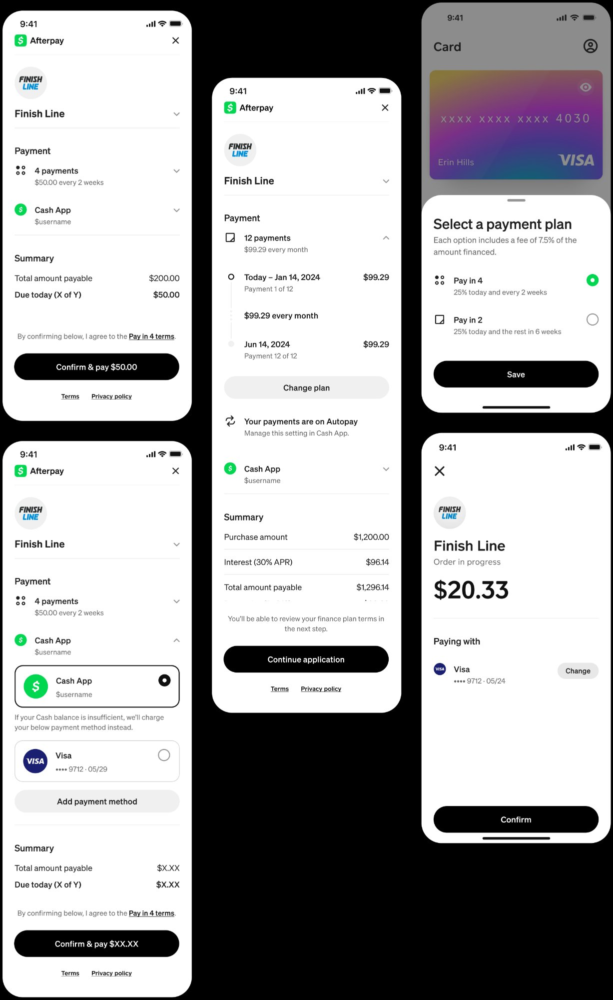

Turning cart abandoners into customers. What started as a "one-click checkout" had become cluttered and harder to navigate for users who did not have everything set up perfectly. We took a step back, listened to merchants and customers, and redesigned express checkout to be fast for returning users and flexible enough for every merchant configuration.
ConversionMobile designResearchScalable for diverse merchant needs
My role
Lead designer (sole designer)
Team
1 PM, 6 engineers
Timeline
2021 to 2024 (ongoing iterations)
What we noticed
In 2021, while the checkout experience was fully ramped up, we took a step back to analyse the market and our own data. Despite the idea of one-click checkout, Express was a paradox: beyond using BNPL, a lot of the customers we interviewed were using Afterpay for convenience. But Express required more checks and sometimes more effort from customers who did not have everything set up the right way from the start.
Three signals pointed the same direction:
Merchants told us customers were dropping off at checkout when it came time to enter their details.
Returning users expressed frustration at having to re-enter information, especially when they had already used Afterpay before.
Conversion data confirmed it: drop-off rates spiked whenever address or payment fields were required.
We saw an opportunity to build a lightweight, streamlined checkout, fast enough for repeat users, and flexible enough to fit diverse merchant setups.

Express checkout across multiple configurations: payment plan selection, Cash App pay integration, and single-screen confirmation flows.
What I did
1
Streamlined the checkout flowReduced steps and inputs across the core returning-user journey. Used Fullstory and UXR to guide iterative design and product direction, making decisions based on where users were actually dropping off rather than assumptions.
2
Merchant configuration supportPartnered with sales and integration teams to design patterns that could adapt to varied merchant setups, covering digital goods, deferred shipping, store pickup, and everything in between.
3
Usability testing and iterationLed usability testing rounds at key decision points. Refined flows based on real conversion data rather than qualitative feedback alone.
4
Address management evolutionThe first version offered limited flexibility for shipping or pickup variations. As new merchants onboarded, edge cases multiplied: digital goods, deferred shipping, store pickup. I designed modular, configurable address flows that could adapt to any order type while keeping checkout fast and intuitive.
5
Address patterns I shippedModular flows for shipping, pickup and digital goods. Flexible patterns for delivery selection and location display. Future-proofed for evolving merchant and regional needs, while preserving merchant-specific logic.
"Express checkout doubled cart conversion and reduced abandonment by 23%."Merchant Reporting and Mastercard Express Checkout Impact Report, 2021
Outcomes
3.2M to 7.8M
MAU growth
$9B to $24B
GPV growth
+200 bps
Express checkout conversion
55s to 28s
Average checkout time
Optimisation highlights
2022
One-tap revamp, 2 fewer form steps+110 bps conversion lift.